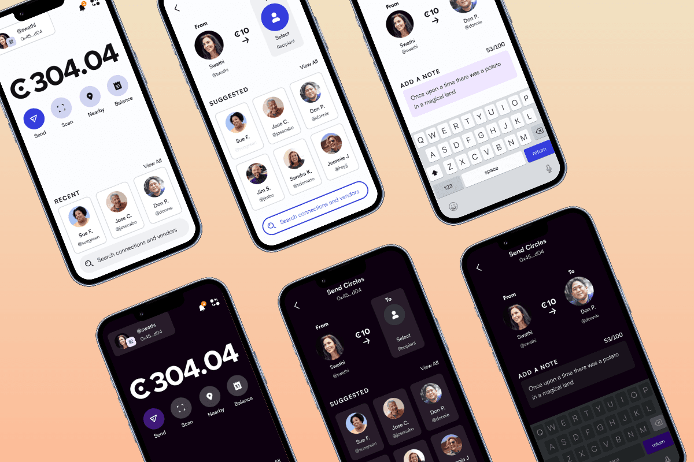
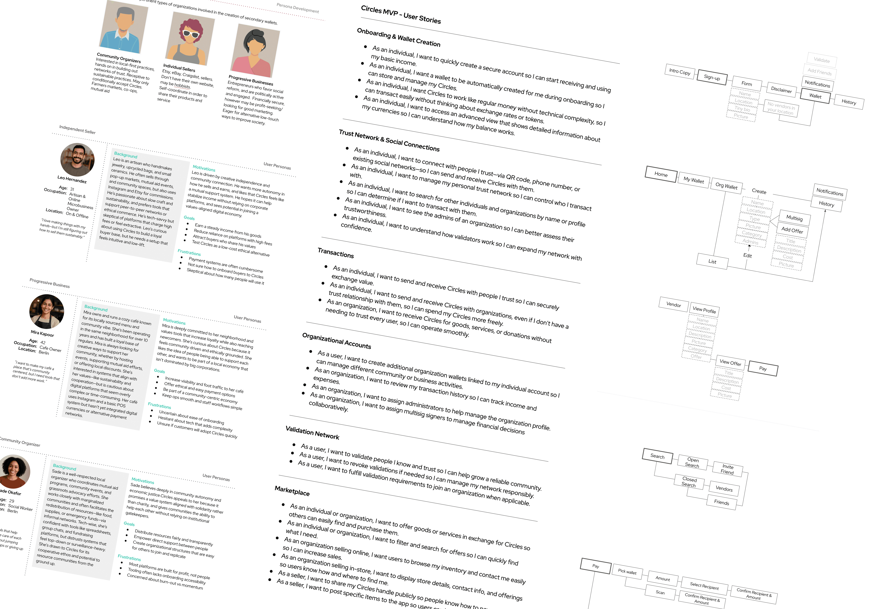

Circles · 2017–21 · Head of Product
A decentralized basic income — 100,000 users in days.
Circles is a trust-based cryptocurrency exploring a community-first, decentralized universal basic income. I brought it from 0→1: tokenomics, full UX cycle, multi-city pilots, and the teams that delivered it.

Product leadership in uncharted territory
Leading product on Circles meant making a blockchain-based currency legible to people unfamiliar with crypto — easy exchange, security, and peace of mind. The product strategy adapted as the project grew: a decentralized identity system, a social feed, and a built-in marketplace, integrated into communities of local sellers and businesses. I defined the tokenomics driving retention and trust, led expansion planning, and built public-sector partnerships.

A full UX cycle, from archetypes to tested prototypes
UX was organized around archetypes and personas from our target audiences. I facilitated design sessions with the full team to craft user stories, mapped information architecture and user flows, and ran testing early — wireframes internally first, then iterating low-fidelity prototypes with real testers.

Results
- Launched and went viral — 100k+ people onboarded within days
- A living alternative economy accepted across multiple cities
- Presented at conferences worldwide; cited in economic journals for its design
I brought Circles from 0 to 1 with end-to-end design — the foundation for an accessible, scalable product and a live economic experiment.